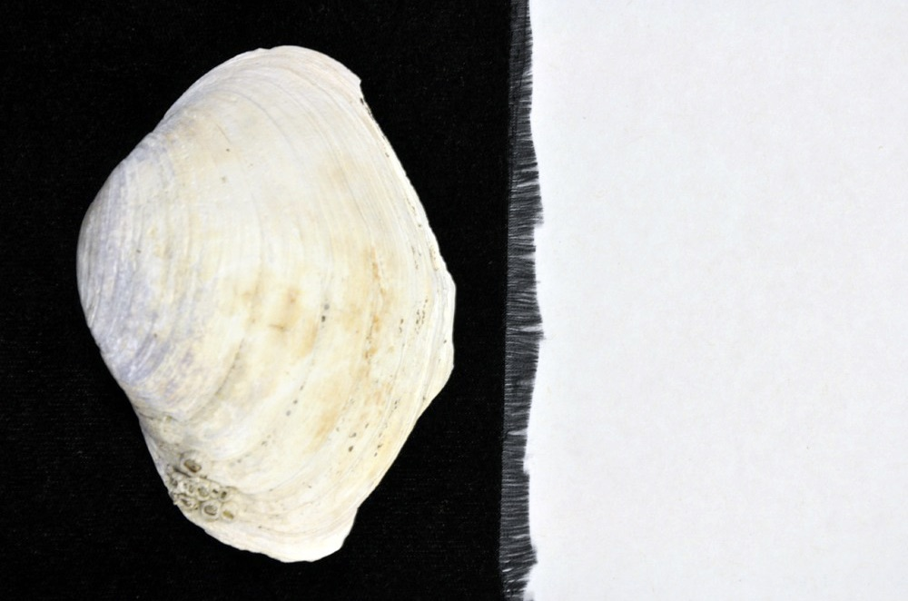
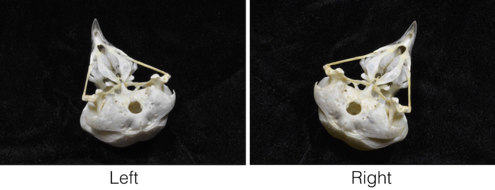
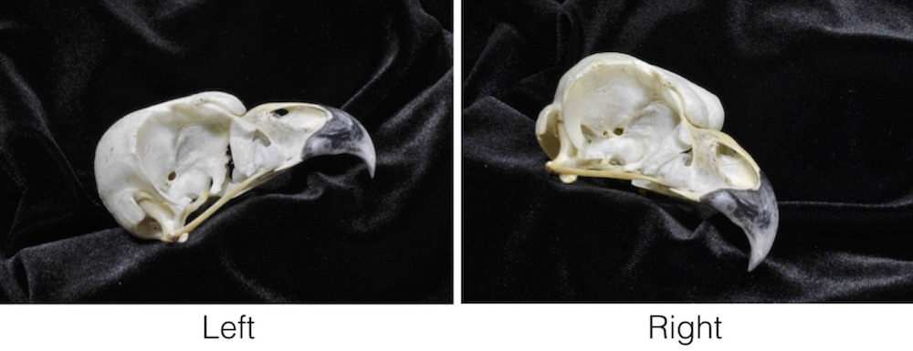
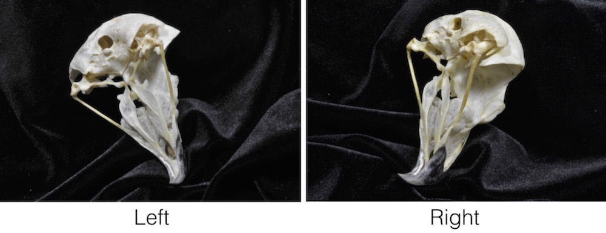

6 Photographing objects
This section provides some extra details when using a stereo setup with photographs. Once the cameras are calibrated you can begin photographing objects. The number of objects that can be photographed is only limited by the time it takes to position and photograph each object. You can think of this as cycling the objects through the calibrated space. Note that it doesn't matter whether you calibrate the cameras before or after taking photographs of objects - just so long as the cameras remain motionless throughout.
It is best to have a uniform background that provides good contrast to your specimen. First, this can decrease the photo size by as much as half (encoding a large black space takes up less space than a multi-colored, noisy background). Second, it's easier to discern points on the edge of the specimen when the edge is clearly distinguishable from the background. For light-colored specimens, black velvet works well. The cheapest material available at fabric stores works great and costs about $10 a yard.
If you're collecting data on features around an entire object (for example the top, side and bottom of a skull) you can rotate the specimen and take two or more pairs of photographs of the same object (referred to here as "aspects"). You'll end up with two or more separate sets of landmarks and/or curves in different coordinate systems. These different sets can be aligned, or "unified", based on landmarks that are common between the sets to create a single set of landmarks and/or curves.
If you'd like to see an example of this, download this stereo image set (4 MB). After you unzip the folder, you'll find an "Images" folder that contains left and right images of two different species of bird: a Great Horned Owl (Bubo virginianus) and an African Gray Parrot (Psittacus erithacus). For each species there are 3 different aspects of each skull, with the filenames ending in "a1", "a2", and "a3". The Great Horned Owl images are shown below.
The first aspect shows the area underneath the skull most clearly,
the second aspect shows the side of the skull most clearly,
and the third aspect shows the area around the ear most clearly.
StereoMorph has a function that will automatically unify the landmark sets from different aspects, which will be detailed in Unification of reconstructed sets. But in order for the function to recognize different aspects, you'll need to follow a particular naming convention: each file must end with an "a" and the aspect number as shown above. Also, use only letters, numbers and underscores when naming the image files (no spaces). Upload the photographs from each view (as .jpeg/.jpg files) into a separate folder. When you name each view folder be sure to use the same names that you used in the calibration step (e.g. "Left" and "Right" or "View 1" and "View 2").
Depending on the data you want to collect you might be able to get away with a single pair of images of each specimen (a single aspect). If you do use multiple aspects, you'll need some overlap in landmarks among the images (at least three, preferably five to six) in order to combine all of the points into a single 3D point set.